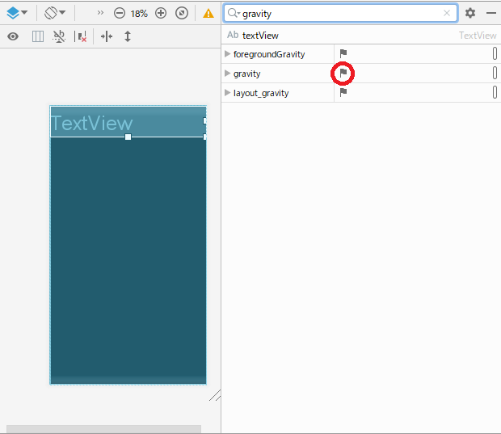

AndroidのTextViewを右寄せにする方法
AndroidでTextViewを右寄せにする方法をメモ。
環境
- Android Studio : 3.5.2
方法
まず、Aundroid Studio上でTextViewを図のように配置してみた。
この状態でビルドし、実行。
次のように、左寄せに表示される。
Android Studioに戻り、gravityという項目を検索。
grivityの右にある旗をクリック。

チェックボックスのリストが表示される。
いろいろあるが、今回右寄せにしたいので、rightにチェックをつける。
gravityのrightにチェックを入れた状態で、ビルドする。

ビルドが成功したら、実行する。
右寄せで表示された。